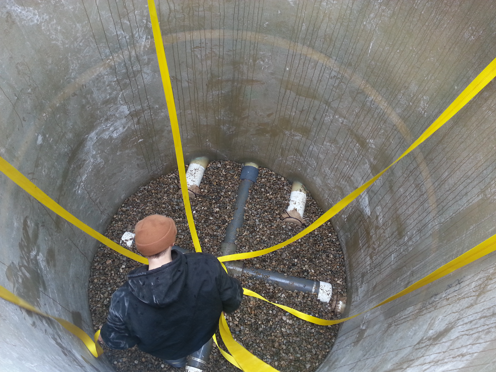
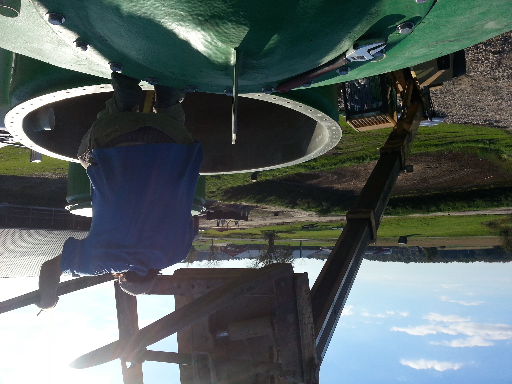
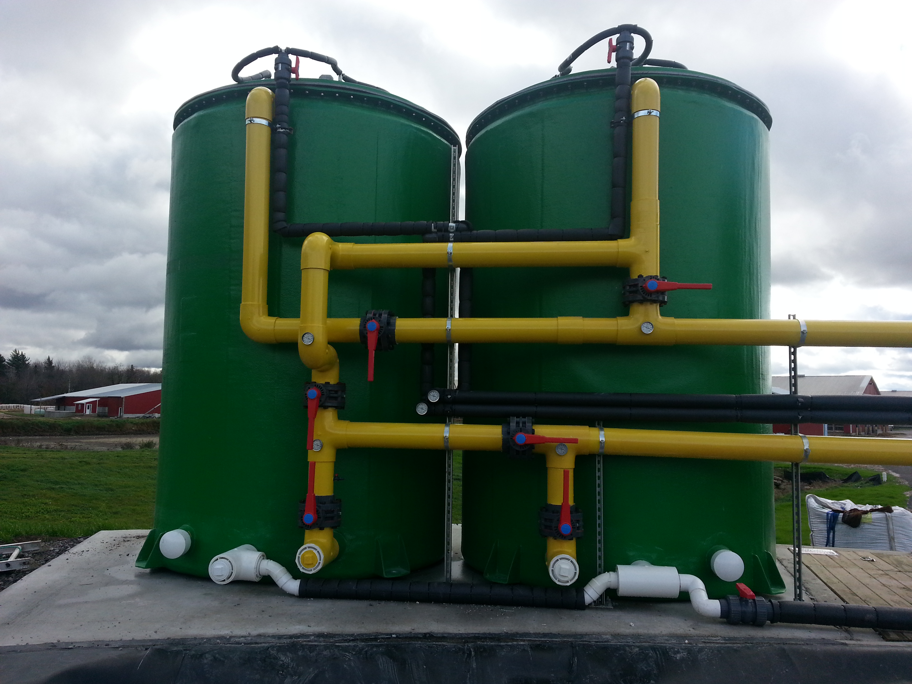
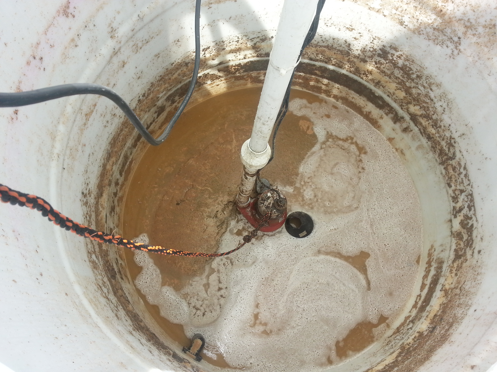
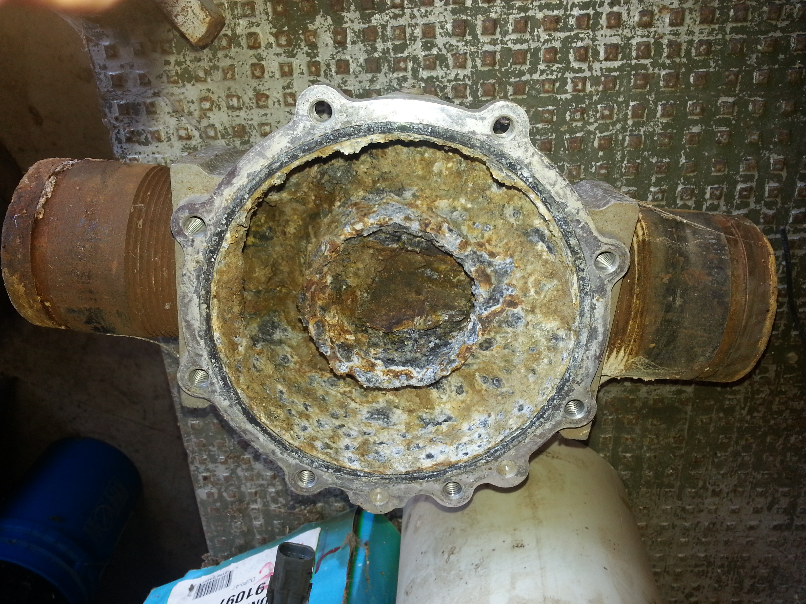

environmental
Where do I even begin with this?
There are two classes of jobs in a way: One that requires repetition and one that requires constant troubleshooting.

The reason I couldn't see myself being a musician or an athelete was because of the repetition needed to be perfect. I never had those instincts. I want to learn a skill, use it, and move on.
I never understood that by in large, majoring in a topic meant that for work you would end up largely working to fix or repair this day in day out. Lawyers, doctors, engineers, were by in large troubleshooting keeping the system afloat. In the end, I also started to factor my own personal safety highly into this equation of needs.

For the environmental aspects of industrial systems, this meant that by and large I was going to have to watch the systemic deconstruction of our natural world, while the industries, slowly dragged themselves to this reality where synthetic manufacturing would be minimized. Maybe had a stayed in the game, I would be contributing to projects with biocompostable plastics or some other technology that really changes the game with regards to waste, but I came around to the believe that through software and resource sharing, the opportunity would to reduce energy use and materials would be signficant and not require a shift in our manufacturing systems. So this began to be the kind of optimization I would pursue wholesale.

Or maybe that's the rationalizing what happened, which is that it was nearly impossible to find a job in my chosen field, and rather than dwell on it, I decided to transition to a robust job market.
Either way, I've had the opportunity to dump tons of gallons of waste inadvertently into rivers. I've sent giant containers of sulfurous material to landfills, and I've watched petroleum drain into rivers, suburban areas, and witnessed fracking subsidence. Why? Because in a way there's often no budget that would lead to actual solutions, or the solution we came up with is the best thing for the environment given that we have industrial targets for production elsewhere in the project. It was a tightrope walk to be sure.

I am very hopeful that I will be able to return to the environmental world with a startup someday but for now, I'm happy to pursue a job where I'm not quite as responsible for physical degradation.

This is a stub, there's more coming